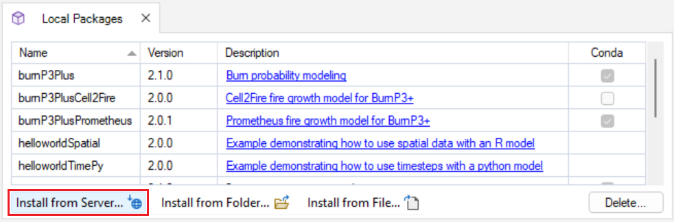

| ## Notice to Users |
| The Getting Started documentation and associated Tutorials for this SyncroSim package currently reflects information for SyncroSim version 2. We are in the process of updating these pages to ensure compatibility with SyncroSim version 3. In the meantime, please note that some instructions, references, and/or images may not fully align with the latest version of SyncroSim. We appreciate your patience as we work to provide updated resources. |
To get started working with omniscape SyncroSim,
begin by:
1. Installing
SyncroSim and Julia 2.
Installing the
omniscape SyncroSim package
Running omniscape SyncroSim requires that SyncroSim and Julia be installed on your computer. 1. Download SyncroSim version 3.0 or greater here{:target=“_blank”} and follow the installation prompts. 2. Download Julia version 1.9 or greater here{:target=“_blank”} and follow the installation prompts.
1. Open SyncroSim Desktop.
2. Select Files > Packages.
3. The Packages window will open, listing all the SyncroSim packages installed in your computer. To install a new package from the Package Server, click Install.

4. A new window will open listing the packages available for install from the Package Server. To install omniscape SyncroSim, mark the checkbox beside the package name and click OK.

5. The omniscape SyncroSim package uses Conda to manage the package dependencies. Upon installing the package, you will be prompted to install Conda if it is not already installed in your computer. Then, you will be prompted to create or update the Conda environment for omniscape SyncroSim. Click Yes.

6. Return to the Packages window, omniscape will now be listed along with the other installed packages, and the Conda checkbox will be marked.

Once the requirements have been installed, the following tutorials will cover the basics of the omniscape and omniscapeImpact SyncroSim packages for connectivity analyses: 1. Reproducing the Omniscape.jl example with omniscape SyncroSim 2. Measuring the impact of connectivity change with omniscapeImpact